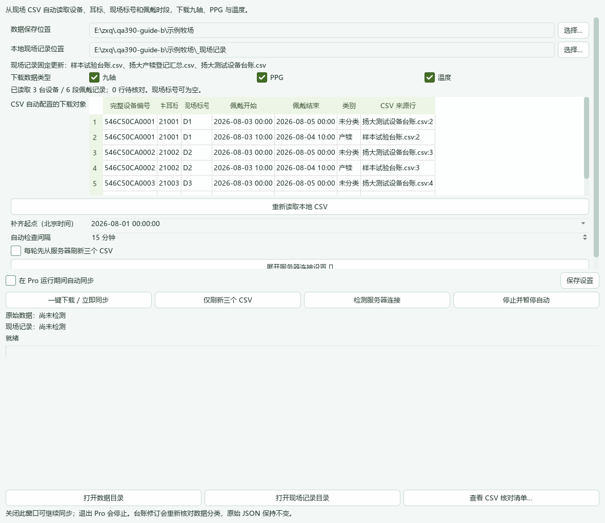
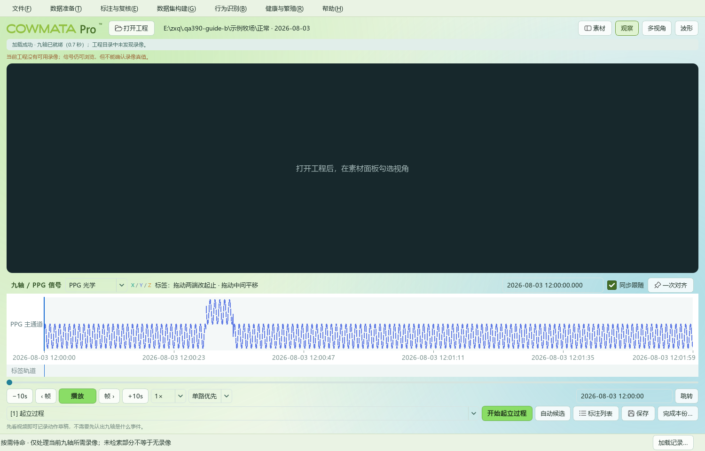
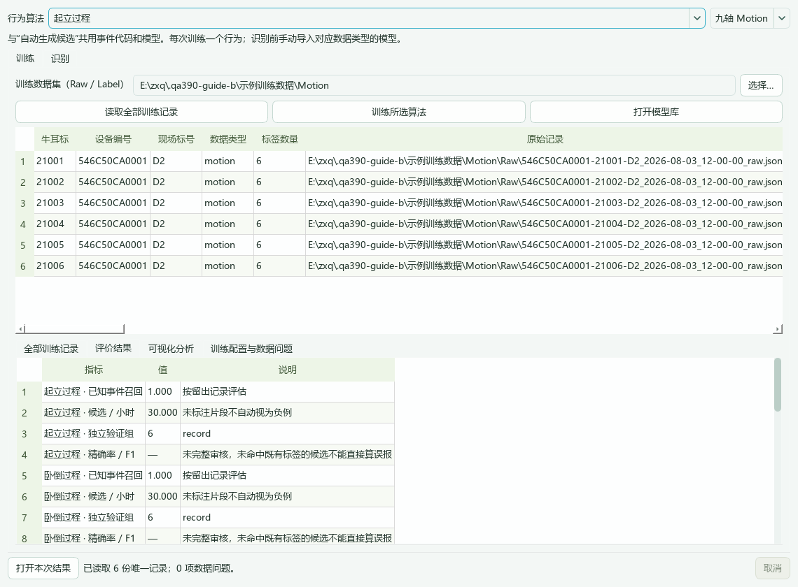
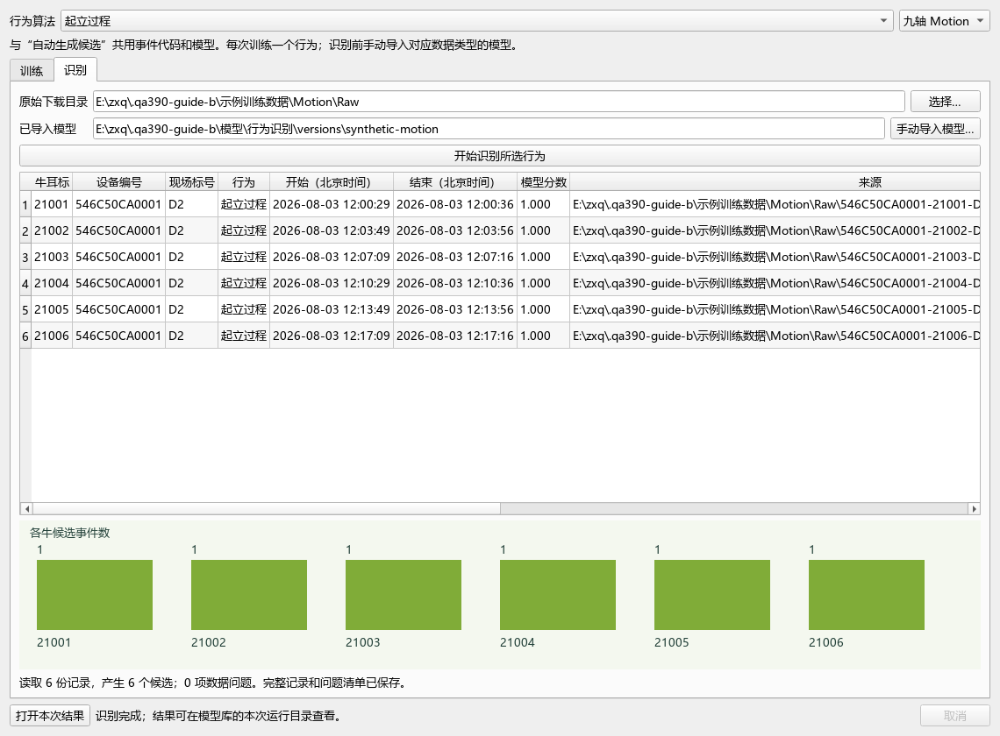
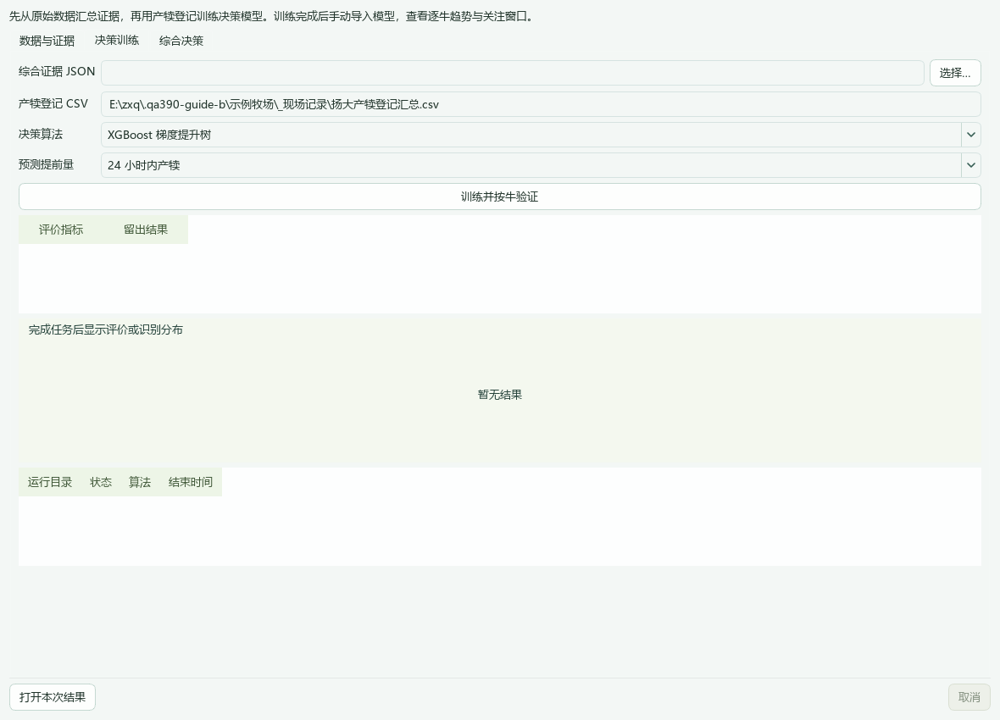

COWMATA Pro 3.9
下载 → 标注 → 数据集 → 训练 → 导入模型 → 识别与决策
截图来自本版实际运行界面，使用合成台账和信号演示操作，评价数字不代表牧场预测效果。
1先下载数据
数据准备 → 端侧数据下载
确认 F:\牛舍\_现场记录，点击“重新读取本地 CSV”，检查自动列出的设备和佩戴时段。再点“检测服务器连接”与“一键下载 / 立即同步”。需要持续更新时勾选“在 Pro 运行期间自动同步”。

完整 12 位设备号不加前缀，4 位简写自动补全；现场标号可为空。
2一次对齐后标注
打开工程 → 选择日期与 Motion / PPG
在录像与信号中找到同一个动作，分别停到对应位置，点击“一次对齐”。选择行为并设置起止，保存后复核。

图中是合成 PPG 信号。未选择录像时可看波形，不能确认录像真值。
3导出数据集
数据集构建 → 行为识别数据集
核对来源并导出。保留 Raw 与 Label 成对文件，不单独改名或替换内容。
Raw 是原始记录，Label 是对应标签；两者通过内容哈希关联。
4训练一个行为
行为识别 → 训练与识别 → 训练
顶部选择行为和九轴/PPG，选择数据集，依次点击“读取全部训练记录”“训练所选算法”。完成后看训练历史、评价和可视化，点击“打开本次结果”。

训练结果保存在外部模型库 F:\科牧特\_模型；图中评价仅为合成数据流程演示。
5导入模型并识别
行为识别 → 训练与识别 → 识别
选择原始下载目录，点击“手动导入模型”，选择训练结果中的 suite.json，再点击“开始识别所选行为”。

九轴和 PPG 使用对应模型；自动候选和产犊证据使用同一导入版本。
6生成产犊综合决策
健康与繁殖 → 产犊
“数据与证据”选择原始数据，生成综合证据。“决策训练”选择证据 JSON、精确产犊 CSV、算法与提前量，训练并按牛验证。“综合决策”手动导入 decision.json，开始决策并按牛查看结果。

缺失的心率、血氧与结局保持未知，风险结果需结合现场复核。